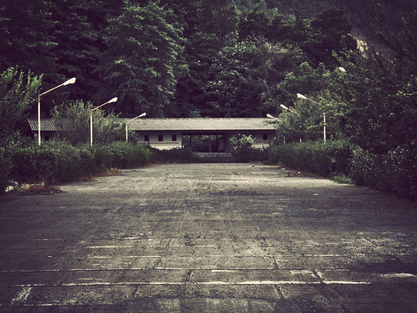
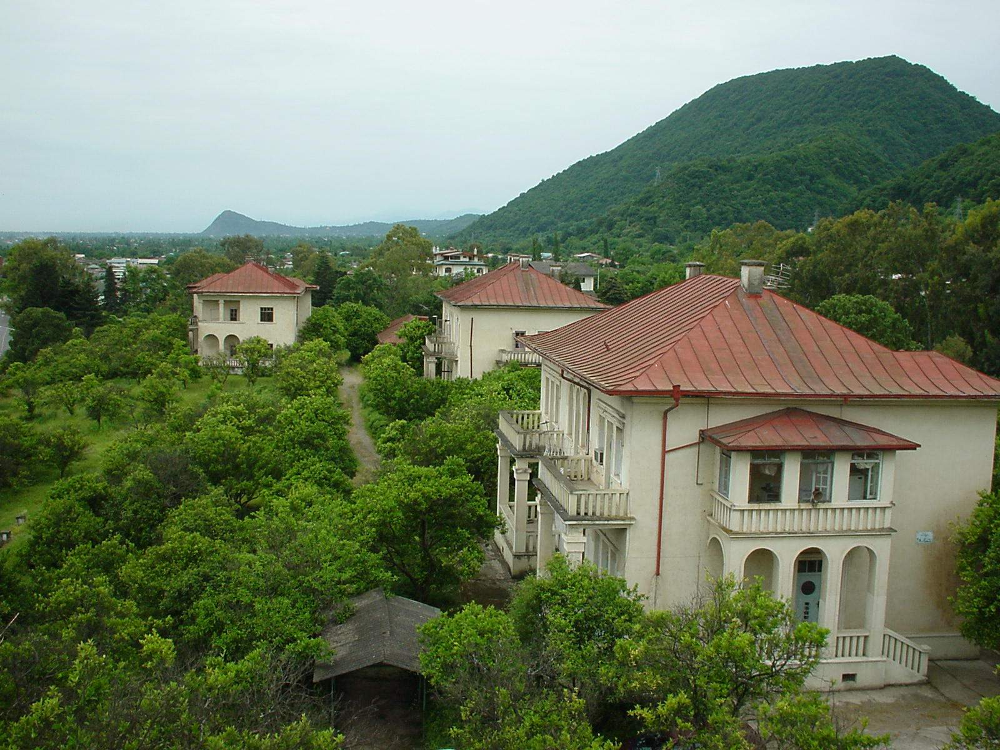
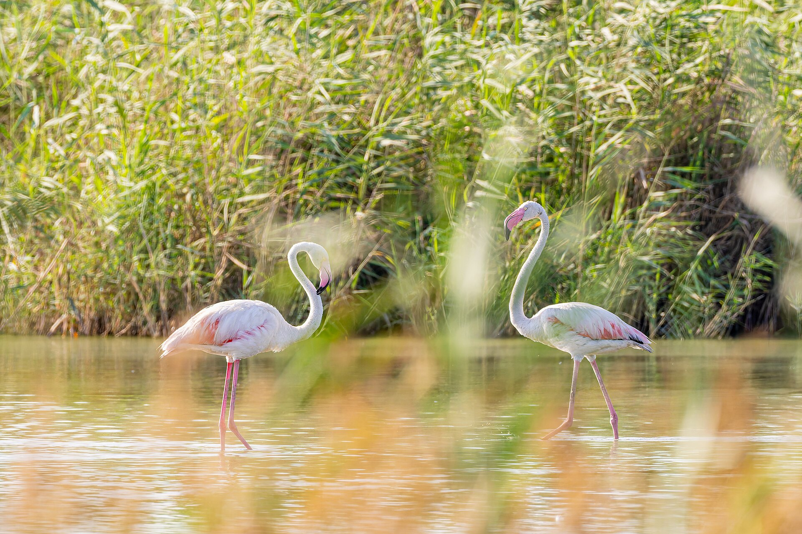
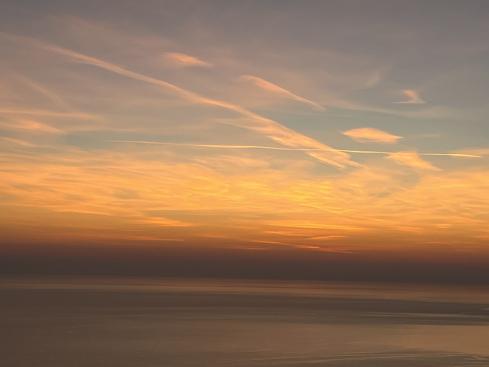
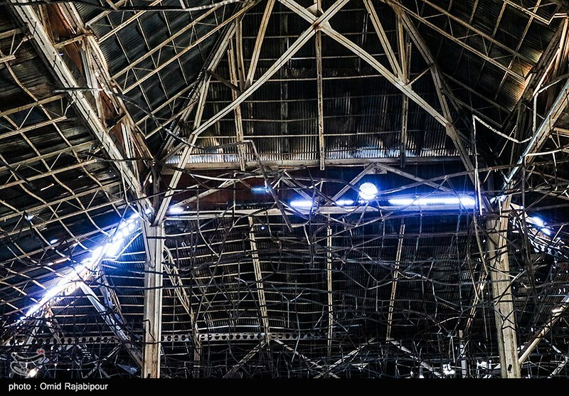

نخست / گالری تصاویر
گالری تصاویر رامسر
مجموعهای از تصاویر واقعی منطقه برای آشنایی بصری با طبیعت، چشماندازهای شهری و جاذبههای رامسر.
قابهایی از شمال
رامسر از نگاه تصویر
در این گالری تنها تصاویر موجود و قابلاستفاده در مخزن نمایش داده میشوند. برای رعایت حقوق پدیدآورندگان، منبع هر عکس و نوع مجوز آن نیز درج شده است.

عکس: *Kiana* · منبع و مجوز CC BY 2.0

عکس: نادر مظلومی · منبع و مجوز CC BY-SA 4.0

عکس: نادر مظلومی · منبع و مجوز CC BY-SA 4.0

عکس: Nahid V · منبع و مجوز CC BY 2.0

عکس: Yasaman khayati · منبع و مجوز CC BY 4.0

عکس: Yasaman khayati · منبع و مجوز CC BY 4.0

عکس: Alipvd · منبع و مجوز CC BY-SA 4.0

عکس: Ali Safdarian · منبع و مجوز CC BY 3.0
این تصاویر مربوط به شهر و منطقه رامسر هستند و لزوماً تصاویر خود ساختمانها یا مراحل اجرای پروژه آفتاب رامسر محسوب نمیشوند.
اطلاعیهها و خبرهای مجموعه
برای دنبالکردن اطلاعات منتشرشده به بخش اخبار بروید.